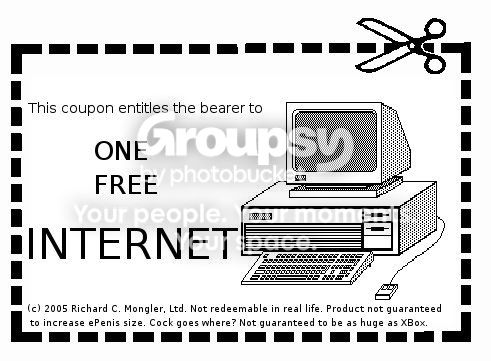

And once again, you prove your ignorance. Your completely wrong. After all, it only takes the faith of a mustard seed to get to heaven.
And you forgot Elijah. Hes not even dead.
And you forgot Elijah. Hes not even dead.
And once again, you prove your ignorance. Your completely wrong. After all, it only takes the faith of a mustard seed to get to heaven.
And you forgot Elijah. Hes not even dead.
Lol, sorry for messing up your fairy tale.
What? You think you're right? You don't believe in God because you and your "superiour" mind can't understand Him?By your beloved Church's definition, no mind can understand Him.
Hmm-hmm.What? You think you're right? You don't believe in God because you and your "superiour" mind can't understand Him?By your beloved Church's definition, no mind can understand Him.
In this way, you don't understand Him any better than I do.
Please be consistent.
The difference between you and me in this case is that I can see how naming something that is incomprehensible just makes an empty name. "God" means nothing if used to describe something that can't be understood.
 Wrong again Tsukatu. OUr minds can't FULLY comprehend him. If we couldn't comprehend Him at all, we wouldn't know what God is.
Wrong again Tsukatu. OUr minds can't FULLY comprehend him. If we couldn't comprehend Him at all, we wouldn't know what God is.So anyone who doesn't believe in God doesn't understand Him? I understand what God is. It's someone to transfer responsibility for everything onto. It's someone we believe in because He makes us feel safe. It's a tool to control the minds of thousands of unwitting slaves. It's a Lie which has cheated the human race of its full potential, destroyed countless lives and one which we WILL get over. You can't stop us atheists. We're everywhere, our numbers are growing and we're pissed off. If God comes anywhere near us we'd give the bugger a right beating.
 Your funny. Are you saying your going to fight an invisible, all powerful, being? You do realise that He could just stop your heart at any second? And your going to fight him. Good luck with that. 'Cus satan tried that once, and he got a "royal licking", as one might say. And talk about inconsistent. You went along the lines of... God's a lie! Hes FAKE! But if he attacks us, we are going to kick his all-powerful butt! Hoo-rah!
Your funny. Are you saying your going to fight an invisible, all powerful, being? You do realise that He could just stop your heart at any second? And your going to fight him. Good luck with that. 'Cus satan tried that once, and he got a "royal licking", as one might say. And talk about inconsistent. You went along the lines of... God's a lie! Hes FAKE! But if he attacks us, we are going to kick his all-powerful butt! Hoo-rah! I always thought the bible was the thing that defined Christianity.Isn't it? It shows the do's and don't's of the religion, I think. But what should I know? I'm not a Christian.
I always thought the bible was the thing that defined Christianity.
Hmm-hmm.Legendary theologians have been forced to agree with the notion that, if God existed, no part of Him can be understood, lest he is attributed mortal characteristics that chain him down and disqualify him as a God.
The difference between you and me is that I have faith, and at least know what I'm talking about here.*Releasing control art restriction to level six.*

I really hate to take Obby's side on this, but I think you're wrong here Suki. Luther was a PROTESTANT. He attacked reason because reason is something Catholics believe is important.Christianity, like all religions, has an element of faith, which is, as I've said, likely in a series of asides denoted by commas, such as the ones in this sentence, the opposite of a rational deduction, and is entirely hostile in its nature to reason.
I really hate to take Obby's side on this, but I think you're wrong here Suki. Luther was a PROTESTANT. He attacked reason because reason is something Catholics believe is important. Catholics believe that God can be found through both faith and reason. I've even seen a Catholic priest on T.V. try to prove God exists through reason.Hate to say it, but he is right. Luther broke away from the Catholic church to establish his own. We're learning all this fun stuff in AP European history right now.
Unfortunately, my brother took the T.V. from me and changed the channel, so I am unfortunately still an atheist

^hey look my name!
hehe
obby is such an asshole though
i have every right to not belive in heaven
there is no proof of it
no hard evidence
it's just some story some retard who couldn't understand death made up so he would feel better about dying
Fuckin' Obby,
Hmm-hmm.Legendary theologians have been forced to agree with the notion that, if God existed, no part of Him can be understood, lest he is attributed mortal characteristics that chain him down and disqualify him as a God.
The difference between you and me is that I have faith, and at least know what I'm talking about here.*Releasing control art restriction to level six.*
Theists like to claim that there are two paths to attain truth: reason and faith. One of the reasons I call myself an explicit atheist (active denial of the supernatural and/or transcendent) is because I have a strong conviction that any part of the universe can be explained rationally. And so I believe strongly in science. But religion has an element of faith, which is the opposite of rational deduction (if it had no element of faith, it would be a science and not a religion). Because I believe that anything can be explained rationally, I don't believe in things people can come up with that are irrational, in other words, things that require faith. My denial of theism is a consequence of my denial of anything that can't hold its own against a rational examination.
Faith requires abandoning reason. You shouldn't claim to know what you're talking about, because that's inconsistent for someone with faith. Like famous fools as Tertullian, the best approach would be for you to be proud in the fact that you have no clue of what you're talking about. It would be more consistent.
Did you know that Thomas Aquinas, who was pretty much the leading authority on theistic philosophy and the guy the Church credits for its continued survival, was an atheist until he found out about the acceptance-based-on-faith aspect of Christianity? He had denied it because it was tremendously irrational, but when he realized that it was against all reason, he accepted it. I don't know why someone would go so drastically batshit at the drop of a hat, but you know them wacky Christians!
Ready for fun quotes?
The Church Father, Tertullian (150-225 CE):
"And the Son of God died; it is by all means to be believed, because it is absurd. And He was buried and rose again; the fact is certain because it is impossible."
"Christ laid down one definite system of truth which the world must believe without qualification."
Martin Luther:
...calls reason "the devil's bride," a "beautiful whore," and "God's worst enemy."
"There is on earth among all dangers no more dangerous a thing than a richly endowed and adroit reason, especially if she enters into spiritual matters which concern the soul and God. For it is more possible to teach an ass to read than to blind such a reason and lead it right; for reason must be deluded, blinded, and destroyed" (I added the bold).
"Faith must trample underfoot all reason, sense, and understanding, and whatever it sees it must put out of sight, and wish to know nothing but the word of God."
"[The Lord] will destroy the wisdom of the wise, and will bring to nothing the understanding of the prudent." - The First Epistle of Paul the Apostle to the Corinthians (1:19)
Long story short, if you dare claim that there is reason behind God, you're fighting the foundation of Catholocism. When your interpretation of such fundamental elements of Christianity differs radically from Aquinas', you are unqualified to argue for Catholocism in the slightest.
I'm really starting to get pissed at this "you clearly don't understand" bullshit. Do your reading. Know your faith. You know the tip of the iceberg that your youth group leader and your priest entice you with. It bleeds out of every statement you make that you claim is consistent with Catholic antiphilosophy.
...wouldn't the Church know what it teaches?...The Church is composed of fallible man... quite some of the Bible is ambiguous and can be interpreted concretely, abstractly, or even otherwise
... you can look at the beliefs from a 1st person view. In this view the Church teaches what is right or wrong. This is because the Catholic Church is what defines the religion.... The Church defines what the religion is about, because, in essence, the Church is the religion.
The Church defines what the religion is about, because, in essence, the Church is the religion.[/b]The Church is not the religion. The Church is the one that teaches the religion. We do not worship the church. The Church is not the religion.
it's like obby is trying to convince a llama that a block of osmium does not have the same density as saturnWhose side are you on, exactly?
Do you not realise that our understanding of God is only what our minds make of Him, and not actually Him? It appears you haven't...Then it is misinformation, and priests knowingly tell pretty lies.
I'm short of breath and on the brink of an anxiety attack. It's a good thing you stopped writing when you did; I may have had to drink the blood of a child to get my vigor back.
Whaaaaaaat? The Church and the Bible the same? In what way? The scriptures are considered the Word of God, which it is the Church's role to interpret and teach. Furthermore, this is by no means the entire fuction of the Church. It is also supposed to teach Holy Tradition, which is the more correct response to ZZ9; Catholicism is defined by Sacred Scripture and Holy Tradition, which are interpreted, taught, and generally administered by the Church. However, the Church is not these things, in the same way that a judge is not the law, but one who interprets and administers the law.I always thought the bible was the thing that defined Christianity.Well, one would consider the Bible and the Church to be the same.
I wish you were kidding. But I could easily see you doing that.
Whaaaaaaat? The Church and the Bible the same? In what way? The scriptures are considered the Word of God, which it is the Church's role to interpret and teach. Furthermore, this is by no means the entire fuction of the Church. It is also supposed to teach Holy Tradition, which is the more correct response to ZZ9; Catholicism is defined by Sacred Scripture and Holy Tradition, which are interpreted, taught, and generally administered by the Church. However, the Church is not these things, in the same way that a judge is not the law, but one who interprets and administers the law.I always thought the bible was the thing that defined Christianity.Well, one would consider the Bible and the Church to be the same.
Reference: Catechism of the Catholic Church, Section 1, Chapter 2, Article 2 (The Transmission of Divine Revelation) and Section 1, Chapter 2, Article 3 (Sacred Scripture).
I wish you were kidding. But I could easily see you doing that.
You just ignored his argument completely in favour of insulting him. Don't you have a counterargument?
I didn't mean the exact same. Just that they belong to the same category.
Im not going to give another arguement. Why? Because then he would do the same. Then me. Then him. And wed keep throwing punches at each other until a flame war starts. Do you want that? And also, agreeing with what he said he would do, technically isn't an insult. Now, he was kidding, and so was I. To some extent.
Theists like to claim that there are two paths to attain truth: reason and faith... And if I am shying away from an arguement by being mature, Tsukatu is too, but more so. He couldn't even give a proper arguement, and had to result to calling me a "fucking idiot". ... He then goes on to call me a thick. Stellar arguement, aye? ... Again, another ludicrous insult. He ignores the fact that I already dismissed his arguement, but he manages to say hes still right without gicing anything new, and says how much he hates me.
He hates me for having a different view from him. How mature.So, you really really want me to reply? Your like a gnat that wont go away. I said it wqould be better to stop. Byt you persist, so I will reply. I will reply short an to the point. Happy now?What? No, I meant that if you don't wish to respond because you don't think the argument is going anywhere, it is polite to say so. It's like saying goodbye to end a conversation instead of just turning your back on someone mid-sentence. Since you've said it now, if you don't want to respond, then don't.
Yes Tsukatu, you did say theists use faith and reason for truth.
Theists like to claim that there are two paths to attain truth: reason and faith
... And if I am shying away from an arguement by being mature, Tsukatu is too, but more so. He couldn't even give a proper arguement, and had to result to calling me a "fucking idiot". ... He then goes on to call me a thick. Stellar arguement, aye? ... Again, another ludicrous insult. He ignores the fact that I already dismissed his arguement, but he manages to say hes still right without gicing anything new, and says how much he hates me.
He was pointing out that your dismissal was illogical!
His tone was quite abrasive, yes, and I would prefer it if he didn't argue in such a manner.I couldn't possibly stay sane without entertaining myself while I work on something so tedious.
So, you really really want me to reply? Your like a gnat that wont go away. I said it wqould be better to stop. Byt you persist, so I will reply. I will reply short an to the point. Happy now?I-
He couldn't even give a proper arguement, and had to result to calling me a "fucking idiot".The intelligent reader will notice that I call you a fucking idiot instead of finishing up the sentence that said, "I'm saying that theists are wrong to think that faith is a legitimate way to find the truth." I figured that those three and a half words could be easily guessed. My "argument" in this case was that you utterly failed to grasp my meaning.
He then goes on to call me a thick.YOUR A THICK!!!!!!!!!!
He ignores the fact that I already dismissed his arguementYou hadn't even addressed my argument. You had no idea how to interpret what I put, and you had no clue what the core of my argument was. It was a catastrophic failure in comprehension, Obby.
he manages to say hes still right without gicing anything newI don't even know what "gicing" means, but I'm going to assume that it means something like "adding."
He hates me for having a different view from him.I don't think a single one of my closest friends share my viewpoint. Not a one.
Oh yeah, Tsukatu manages to finish his "arguement" (if it can be called that.) by a sick and crude joke.Thus eliminating his argument from the sphere of correctness!
...He was pointing out that your dismissal was illogical!
Ah, you see? His arguement that my arguement was illogical is based off of one person's views, and not of the entire religion.
On topic: If heaven exists, then it's imperceptible by the human mind. I mean, admit it, you may want to stay in a beautiful green forest, but there's only so much you can do with it in an eternity..
@ Caero. Nice Suki bandwagon, kid.It doesn't take a bandwagon to see pure ignorance.
The reason I hate you is because you refuse to pay attention to what I write, get some bizarre misinterpretation of it that one would normally get from skimming, nit-pick on completely irrelevant details (e.g. I brought up Martin Luther's acceptance that religion, in general, is entirely without reason, and you dismissed that saying that Martin Luther is not of a specific Christian sect), introduce some extremely uninformed "fact" (e.g. Tertullian was some random guy who no one believed, Thomas Aquinas is an idiot, etc.), and then somehow have the nuts to say that I'm extremely uninformed in a dismissive, bored, derisive tone.As much as I hate to say it, QFE.
Instead of replying to Tsukatu, Im going to point out that Im not making those grammar mistakes. Many of those, like "gicing" which cannot be descernered from any word, and are fake. Since Tsukatu has repeatedly used my grammar mistakes in his arguements to try and prove how he is right, I have been checking my grammar. And yet, I supposedly make bigger and bigger mistakes. I am positive Im not doing those. They are too far off. Notice how he uses them to try and make fun of me? Hmm? What exactly do you want Tsukatu? To prove how much more you care about grammar? So what? You can read, so it should be fine. Get over a few mistakes.And, once again, in a post explaining, at length, how you dismiss everything you can't rebut, neglect actually arguing your side of the argument in preference to nitpicking insignificant, inconsequential aspects of a far larger concept, and simply don't adequetly defend (beyond a simple "No, You're Wrong" dismissive claim and occasionally throwing in a rebuttal to what tsukatu didn't actually say) your viewpoint or side of the argument, you
Basically? Im calling out Tsukatu for editing my posts. How did I come to that? Well, for one thing, I never said "gicing".
Oh, and "a thick" is actually used where I live. For the same reasons. I still didn't post that.
@ Caero. Nice Suki bandwagon, kid.
Tsukatu, you claim to be so mature, but in reality you a little kid with a large brain. You lurk around picking fights with anyone you hope to find.Wow, it's just like you really know him.
maestro points out to Black Laminex Boy that this is not in B&T
")
I just want to interject something: Reason tells us the world, on first glance, is flat.As did faith.
I just worte a lengthy post explaining why I hate Obby, but then I realized that he wouldn't use anything I said to try and improve himself.
Obby, you need to stop picking arguments you can't handle, and you need to learn how to admit that you're wrong(when you are, of course, which is the majority).
Instead of replying to Tsukatu, Im going to point out that Im not making those grammar mistakes. Many of those, like "gicing" which cannot be descernered from any word, and are fake. Since Tsukatu has repeatedly used my grammar mistakes in his arguements to try and prove how he is right, I have been checking my grammar. And yet, I supposedly make bigger and bigger mistakes. I am positive Im not doing those. They are too far off. Notice how he uses them to try and make fun of me? Hmm? What exactly do you want Tsukatu? To prove how much more you care about grammar? So what? You can read, so it should be fine. Get over a few mistakes.
Quote: UltimaYou deserve an award. 10/10 for originality. Someone change the topic to: "Finding new and exciting ways to flame Obby and McP3000" would you?
The fact remains that rational consideration is a better means of attaining truth than faith.
it's like obby is trying to convince a llama that a block of osmium does not have the same density as saturnWhose side are you on, exactly?
... Also, I have a question for Tsukatu:
If you died, and you found out that God really exists, what would you say then?

Obby:I never said everyone had to believe in God. I never even mentioned it.
you're a man of faith. good for you. but religion is NOT for everybody. have you ever had someone you loved stolen from you? have you ever been to child beating residentials for 2 years? ever have an abusive alcholic for a daddy? no?
...i lost my faith at 16. i woke up to the real world, and there is no god here.
my point is that not everybody is entirely comfertable with beliveing, as suki so loveingly put it, "FAIRYTALES". i have every right to be an aithiest, and so does suki....and who the fuck are you to say your way is better? to say that you know the "truth", and we're ignorent butt-pickers who dont know right from left? your ego betrays you, and you will be sadly dissapointed when jesus turns out to be a no-show at the end of things.
Tsukatu might bring up some guy from hundreds of years ago who had certain beliefs and tell me Im wrong, even thought that guy isn't representative of today's theist.Still!?
If you died, and you found out that God really exists, what would you say then?I would be very pleasantly surprised. Though I completely dismiss the idea of God, Heaven, etc., it would be a very welcome afterlife. I would love to go to Heaven, in the same way that I would absolutely love to frolic in Candyland. I don't think either exists, but if they do, well damn, I'd shit a kitten.
Of what value is truth? Let's say we believe that rationality will provide more truth than will faith. If this truth that you would have others believe in would leave a person less satisfied with life and less happy, what has been gained? Does it satisfy you to disseminate truth? Does it satisfy you enough to disseminate truth that you're okay with it leaving others unhappy? Does it satisfy you simply to cause this sort of dissonance? What motivates you in this discussion?It is my firm belief that being less happy and knowing truth is a far better position to be in than blissful ignorance. I believe this for a wide variety of reasons, from ideas like higher suicide rates among the weak-willed and stupid to my fervent support of knowledge for the sake of knowledge. Faith is against such ideas entirely. It is a very cruel thing to do to a human mind, and I despise it as I despise all things that are cruel. Er... most things that are cruel.
As an ethical person, I usually strive to make people happy. Would I let those around me continue to deceive themselves if it would make them happy? Probably. It doesn't make sense to you, because you're motivated--I believe--by rationale. The thing that satisfies my life the most is helping other people satisfy their lives. To me, that's the most rational goal, because it's a goal that, if possessed by everyone, would be universally life-affirming.Exactly, I'm the more coldly-rational type, and my ethics would see intentional obfuscation of truth as entirely unacceptable, whatever the reason. Above general human happiness, I believe in progress, and that is greatly stunted if you let people believe in silly things to keep them happy. Better that they know what they're up against and be better equipped to fix it; ignoring the problem by believing something else on faith is not the ideal way to go about it.
To be completely honest, though, I think it would be satisfying to both of you just to see the other concede. Which simply won't happen. You're not seeking to change one another. You're seeking a victory.My personality type loves debate. I understand that it could be denial, but I really don't think that I'm doing this to win anything or convince anyone; I'm doing this to entertain myself, and as well to see how many people I can get to agree with me and laugh beside me. So basically, I'm doing this for kicks and for masturbation of my ego.
...unless you get your kicks simply by wittingly entertaining a meaningless and pointless conversation. Or maybe you're honing in on social skills. Or maybe... just wasting time. Hmm. I had you guys all wrong. I think I understand the motivation behind all this now. It's a little more mundane than previously suspected.
Faith and Reason are meant to work together in the church. We must use Reason to understand the things God and Jesus have done, but some things do not make sense to us, because we cannot comprehend it with our human minds. We must believe those things with Faith because Reason has limits, while Faith has none. We can't believe everything with Faith though because then we could not understand it at all. That's pretty much how the Catholic Church views this subject.This is exactly what I addressed with my Control Art Restriction Level VI post. Please read that through and point out where you're having problems.
You know nothing of me kid. You dont know what Im about. Or how I got to be here today. Or anything. So shut the fuck up about how gaddamned bad your little life is. Sit the fuck down about it.*stifled laughter*
Guess the fuck what. Even if I die and there is no God, I wont be sorry. I was being on the safe side. Ever heard "better to be safe than sorry"? I guess you haven't.It's called Pascal's Wager, and it's been thoroughly beaten into the dirt by any self-respecting philosophy minor. You'd be an utter fool to believe it.
I never said everyone had to believe in God. I never even mentioned it.
I just wrote a 56 page paper scientifically proving that God exists. I also proved the existence of the Holy Spirit, Jesus, and Elijah. I was going to post it here, but then I realised that people would dismiss it right off the bat because of who I am.translation: "im right and i wouldnt expect you aithiests to understand."
The difference between you and me is that I have faith, and at least know what I'm talking about here.translation: "your wrong wrong wrong and im right right right."
You know nothing of me kid. You dont know what Im about. Or how I got to be here today. Or anything. So shut the fuck up about how gaddamned bad your little life is. Sit the fuck down about it.
*stifled laughter*
Love thy neighbor, amirite?
Hey, kai, this bitch just called you a kid.
He also said to suck it up and deal, basically on the grounds that he's been doing so regardless of his pithy emo problems, and clearly his life is harder than yours.
See what this fairytale does to people?
In this case Caero's point isn't that he's trying to big himself up over how much he's written, or trying to imply that he has a much better argument lying in wait. His point is that he feels that whatever he writes will be ignored or misinterpreted by you. Which, ironically, is exactly what has happened.I just worte a lengthy post explaining why I hate Obby, but then I realized that he wouldn't use anything I said to try and improve himself.*Classic* I could do the same.
I just wrote a 56 page paper scientifically proving that God exists. I also proved the existence of the Holy Spirit, Jesus, and Elijah. I was going to post it here, but then I realised that people would dismiss it right off the bat because of who I am.

Quote: Arachnid... supernatural insurance...
My personality type loves debate. I understand that it could be denial, but I really don't think that I'm doing this to win anything or convince anyone; I'm doing this to entertain myself, and as well to see how many people I can get to agree with me and laugh beside me. So basically, I'm doing this for kicks and for masturbation of my ego.
Also (and totally off-topic), can you please learn the difference between you're and your?I know the difference, but I never really care to pay attention.
...your mother sucks bunions in hell, bitch.
 You're worse than Tanner.
You're worse than Tanner.
Quote: Ecclesiastes Chapter 8^9 I have thought deeply about all that goes on here under the sun, where people have the power to hurt each other. ^10 I have seen wicked people buried with honor. Yet they were the very ones who frequented the Temple and are now praised[a] in the same city where they committed their crimes! This, too, is meaningless. ^11 When a crime is not punished quickly, people feel it is safe to do wrong. ^12 But even though a person sins a hundred times and still lives a long time, I know that those who fear God will be better off. ^13 The wicked will not prosper, for they do not fear God. Their days will never grow long like the evening shadows.
Quote: Ecclesiastes Chapter 8^14 And this is not all that is meaningless in our world. In this life, good people are often treated as though they were wicked, and wicked people are often treated as though they were good. This is so meaningless!
^15 So I recommend having fun, because there is nothing better for people in this world than to eat, drink, and enjoy life. That way they will experience some happiness along with all the hard work God gives them under the sun.
Quote: Ecclesiastes Chapter 8^16 In my search for wisdom and in my observation of peoples burdens here on earth, I discovered that there is ceaseless activity, day and night. ^17 I realized that no one can discover everything God is doing under the sun. Not even the wisest people discover everything, no matter what they claim.
Quote: John Chapter 15^18 If the world hates you, remember that it hated me first. ^19 The world would love you as one of its own if you belonged to it, but you are no longer part of the world. I chose you to come out of the world, so it hates you. ^20 Do you remember what I told you? A slave is not greater than the master. Since they persecuted me, naturally they will persecute you. And if they had listened to me, they would listen to you. ^21 They will do all this to you because of me, for they have rejected the One who sent me. ^22 They would not be guilty if I had not come and spoken to them. But now they have no excuse for their sin. ^23 Anyone who hates me also hates my Father. ^24 If I hadnt done such miraculous signs among them that no one else could do, they would not be guilty. But as it is, they have seen everything I did, yet they still hate me and my Father. ^25 This fulfills what is written in their Scriptures[a]: They hated me without cause.
And once again, you prove your ignorance. Your completely wrong. After all, it only takes the faith of a mustard seed to get to heaven.My translation would be:
And you forgot Elijah. Hes not even dead.
Capt Weasle:
As nice as those passages are, you can't use the bible to convert a non-beleiver. That requires the beleiver to have faith, which (by definition) he does not.
Supremely true.Quotethere is nothing better for people in this world than to eat, drink, and enjoy life.
...
Not even the wisest people discover everything, no matter what they claim.
You have (some, heh) good ideas Obby, you just tend to put them across in an atrocious fashion.
You shouldn't be. You'd be trying to rationalize your religion, which Thomas Aquinas laid out was the wrong way to legitimize Christianity. You'd be fighting against the Church in your attempt.You have (some, heh) good ideas Obby, you just tend to put them across in an atrocious fashion.Then I shall work on providing sound facts for my arguement, and not provide my views as fact.
You shouldn't be. You'd be trying to rationalize your religion, which Thomas Aquinas laid out was the wrong way to legitimize Christianity. You'd be fighting against the Church in your attempt.Your not a very good person, are you? Your just one sad, sad person who can't stop. I wasn't talking to you. No one is giving any more insults. Yet you march in here, and repremand me for my actions.
You're not a very good Catholic, are you?
You did read the Wikipedia link I gave you, right? At the very least the intro?

Quote: WikiAquinas believed in two types of revelation from God: general revelation and special revelation.[22] General revelation occurs through observation of the created order. Such observations can logically lead to important conclusions, such as the existence of God. Aquinas is well known for his quinquae viae, or five rational proofs for the existence of God
Quote: WikiAquinas felt that the existence of God is neither self-evident nor beyond proof. In the Summa Theologiae, he considered in great detail five rational proofs for the existence of God. These are widely known as the quinquae viae, or the "Five Ways."
Quote: WikiConsequently, many institutions of learning have been named after him.
How well did you read the article Tsukatu?That question was totally unnecessary, considering the sentence right above it already is a goad, and especially with the "So just stop Tsukatu. Your done. <_<" higher up.
It is my firm belief that being less happy and knowing truth is a far better position to be in than blissful ignorance. I believe this for a wide variety of reasons, from ideas like higher suicide rates among the weak-willed and stupid to my fervent support of knowledge for the sake of knowledge. Faith is against such ideas entirely. It is a very cruel thing to do to a human mind, and I despise it as I despise all things that are cruel. Er... most things that are cruel.
)You shouldn't be. You'd be trying to rationalize your religion, which Thomas Aquinas laid out was the wrong way to legitimize Christianity. You'd be fighting against the Church in your attempt.That is entirely incorrect. The Catholic Church does not believe faith and reason are mutually opposed.
Quote: Catechism of the Catholic Church (with bold added)II. WAYS OF COMING TO KNOW GOD
...
35 Man's faculties make him capable of coming to a knowledge of the existence of a personal God. But for man to be able to enter into real intimacy with him, God willed both to reveal himself to man and to give him the grace of being able to welcome this revelation in faith. The proofs of God's existence, however, can predispose one to faith and help one to see that faith is not opposed to reason.
III. THE KNOWLEDGE OF GOD ACCORDING TO THE CHURCH
36 "Our holy mother, the Church, holds and teaches that God, the first principle and last end of all things, can be known with certainty from the created world by the natural light of human reason."11 Without this capacity, man would not be able to welcome God's revelation. Man has this capacity because he is created "in the image of God"
...
39 In defending the ability of human reason to know God, the Church is expressing her confidence in the possibility of speaking about him to all men and with all men, and therefore of dialogue with other religions, with philosophy and science, as well as with unbelievers and atheists.
You and I both know that this is really a flame war, disguised subtly in a topic.How well did you read the article Tsukatu?That question was totally unnecessary, considering the sentence right above it already is a goad, and especially with the "So just stop Tsukatu. Your done.
I don't think I'd ever have been in love were it not for shirking off bits of my rationality. A highly rational person can only treat others in a fashion that is perceived as wholly Machiavellian, becasue the most logical course of action is to only go as far for others as is necessary to benefit yourself. And chicks don't dig that--and it's usually pretty easy to read.
I would be very pleasantly surprised. Though I completely dismiss the idea of God, Heaven, etc., it would be a very welcome afterlife. I would love to go to Heaven, in the same way that I would absolutely love to frolic in Candyland. I don't think either exists, but if they do, well damn, I'd shit a kitten.
'Course, the first thing I'd do is ask God how He does manage to exist despite inconsistencies, etc. I wouldn't explain that He really couldn't blame me for using my mind and critically thinking about His existence, because He'd already know all of that.
The ability to consider how you would react to a hypothetical situation does not imply you accept that anything included in the situation is remotely likely. I can quite easily consider how I would react if I won the lottery, and even plan how I would spend the money, but I don't believe it will happen - for a start, I never buy lottery tickets.I would be very pleasantly surprised. Though I completely dismiss the idea of God, Heaven, etc., it would be a very welcome afterlife. I would love to go to Heaven, in the same way that I would absolutely love to frolic in Candyland. I don't think either exists, but if they do, well damn, I'd shit a kitten.
'Course, the first thing I'd do is ask God how He does manage to exist despite inconsistencies, etc. I wouldn't explain that He really couldn't blame me for using my mind and critically thinking about His existence, because He'd already know all of that.
After I read that, I immediately realised, that somewhere, in the back of your mind, there still is a part of you that believes that there is a God.
http://www.candyland.co.nz/
OMF! CANDYLAND EXISTS! THAT MEANS THERE IS A HEAVEN AND TSUKATU BELIEVES IN IT!
The ability to consider how you would react to a hypothetical situation does not imply you accept that anything included in the situation is remotely likely.
Well, one thing's for sure, that post seemed to show a more gentle side of Tsukatu. The side of Tsukatu that would cuddle up to you at night.
Did you know that you can actually click on "quinquae viae" to find those five arguments from "reason?"Did you read that Tsukatu? He rationalised God. Yet you just finished saying he was against that.Quote: WikiAquinas believed in two types of revelation from God: general revelation and special revelation.[22] General revelation occurs through observation of the created order. Such observations can logically lead to important conclusions, such as the existence of God. Aquinas is well known for his quinquae viae, or five rational proofs for the existence of God
After I read that, I immediately realised, that somewhere, in the back of your mind, there still is a part of you that believes that there is a God.You have no idea how many times I've been accused of that, and you probably have no idea how much I hate it.
Now, it is said by many that the nature and existance of God may be discovered by observation of the natural order which prevades the universe. Let us consider for the purposes of this argument that this is true; that is, the existance and nature of God may be deduced from the existance and nature of the universe. Keeping this in mind, let us look once again at the order of the universe. We note that occurances within the universe are bound to mathematical laws - essentially, the universe runs on logic. We may infer, then, that God is instrisically logical, and furthermore that logic and order are pleasing to Him. Now, we earlier stated that the existance of God may be deduced from the existance and nature of the universe - in essence, we may determine the existance of God with logic and reason alone. Therefore, there is no need for faith. Furthermore, we can state that God does not wish his followers to have faith because the proof of His existence - which negates the need for faith - is an intrisic property of the universe, and therefore also a property of God.Win!

It also makes agnosticism look increasingly logical.Hold on a sec - where'd you pull that from?
If I bought a shack and named it "Heaven," would I begin reaping souls?OMF! CANDYLAND EXISTS! THAT MEANS THERE IS A HEAVEN AND TSUKATU BELIEVES IN IT!No, I think that means that Tsukatu should be true to his word and literally shit a kitten.
I thought that there would be a part of Tsukatu that believes in God /before/ I read that post, as he has believed once before. (Was it Russian Orthodox?)Yeah, it was Russian Orthodox, but it wasn't really belief. It was as much belief as a small child could have in something so complicated, which basically means that it wasn't belief at all, but conditioned practice. I did all the things my parents told me to, cuz that's what kids do. I believed my parents when they said God existed, just as I believed my parents when they told me that sugar rotted my teeth, or when they told me the tooth fairy would come and give me money for my teeth.
Is it possible to prove, then, that no supernatural entity of any sort can ever exist?It wouldn't be an issue of proof, because proof, evidence, existence, etc., may not apply to unreasonable entities the way we think of proof, evidence, existence, etc. We can, however, prove that they don't exist in our knowable universe, not even partially. I believe that all of reality is structured, and that there is nothing outside of our rational, knowable universe, because if there were it would have ravaged our ordered, rational universe long ago.
If I can offer another equivalent: Obby, I can't prove to you that there is an invisible unicorn in my room. I also can't prove its existence rationally, and its existence in my room would actually be logically inconsistent. I would have a very difficult time proving that the unicorn exists. But I want you to have faith, Obby. Have faith that there's an invisible unicorn in my room.
...the difference between a Catholic and a sane person is that the Catholic has no problem having faith in my invisible unicorn. It is on the same premise that he accepted his God. The very same.
Obby:
In this post, you say that you believe that humans are naturally good.
And you call yourself a Catholic.
But what about the times when galloping and neihing (sp?) is heard? And the hole in the wall where the the unicorv stabbed its horn? And the smell? When you consider these things, you can deduce that there is a unicorn in the room.I only hear gallopping and neighing when I'm on LSD. I don't hear it when I really want to or try very hard, but you must have faith that it gallops and neighs!. A wide range of scientists have shown that the object that made the hole can't be determined, but you must have faith that it was actually the unicorn's horn!
Uh, humans are good. They are born with original sin, but that just means they aren't born completely "clean". It doesn't mean they are bad people. If they were considered bad, all babies that die before baptism would go to hell. Yet they don't. They would go to heaven.I may be wrong, but I thought that this was entirely contradictory to the Church's views. I thought it was more of a "humans are born with original sin and all of these cravings to do evil things (seven deadly sins), but they must work hard to be good and earn their way into God's grace."
Think about this. And dont just make a wise crack.But what about the times when galloping and neihing (sp?) is heard? And the hole in the wall where the the unicorn stabbed its horn? And the smell? When you consider these things, you can deduce that there is a unicorn in the room.I only hear gallopping and neighing when I'm on LSD. I don't hear it when I really want to or try very hard, but you must have faith that it gallops and neighs!. A wide range of scientists have shown that the object that made the hole can't be determined, but you must have faith that it was actually the unicorn's horn!
I don't smell God, so I can't really connect something equivalent.
Uh, humans are good. They are born with original sin, but that just means they aren't born completely "clean". It doesn't mean they are bad people. If they were considered bad, all babies that die before baptism would go to hell. Yet they don't. They would go to heaven.I may be wrong, but I thought that this was entirely contradictory to the Church's views. I thought it was more of a "humans are born with original sin and all of these cravings to do evil things (seven deadly sins), but they must work hard to be good and earn their way into God's grace."
It wouldn't be an issue of proof, because proof, evidence, existence, etc., may not apply to unreasonable entities the way we think of proof, evidence, existence, etc. We can, however, prove that they don't exist in our knowable universe, not even partially. I believe that all of reality is structured, and that there is nothing outside of our rational, knowable universe, because if there were it would have ravaged our ordered, rational universe long ago.
I think that many people see our natural universe as a bubble in an endless ocean of supernatural unorderedness. The thing is, that unorderedness doesn't have to obey our orderedness, and that raw disorder would pretty much immediately chew its way through our puny ordered universe and assimilate it.
So again, the fact that we can study science means that we have an ordered natural universe, and the fact that we have an ordered, natural universe means that there is nothing outside of it.
If we can disprove the existence of a supernatural, and therefore irrational being within our own natural universe, then that's all we need.
There is no god. Not "there may be a god, but I haven't had it proven to me yet," but "your god does not exist."
You hear galloping. You hear neighing. You see an imprint on the wall and a loud bang. The imprint is of a horn on the head of a horse. And someone told you there would be a unicorn in your room. One would obviously think of a unicorn.
I see what you mean though. One would need to believe that the evidence is realy to believe in God. But say, for instance, that someone is told about the JFK shooting. One could plainly disregard the evidence of the video, the witness reports, the body... And still say it didn't happen, just because they don't believe the evidence. Even though the evidence clearly points to a bullet and killing JFK.
Now who is being nitpicky? We are using the unicorn because of the topic. For the discussion, unicorn's exist.You hear galloping. You hear neighing. You see an imprint on the wall and a loud bang. The imprint is of a horn on the head of a horse. And someone told you there would be a unicorn in your room. One would obviously think of a unicorn.Erm. I think it's more probable that it's a horse with a horn glued to its head or someone's practical joke. It's much more likely to be something that's common--something we've all seen before. When a guy's walking down the street with a dog leash that seems to magically hover in the air as though he were walking a dog, I'm not going to assume there's an invisible dog. I'm going to examine the situation more closely to figure out what's going on.
I see what you mean though. One would need to believe that the evidence is realy to believe in God. But say, for instance, that someone is told about the JFK shooting. One could plainly disregard the evidence of the video, the witness reports, the body... And still say it didn't happen, just because they don't believe the evidence. Even though the evidence clearly points to a bullet and killing JFK.
None of us were alive when JFK was shot. We all just take it on faith that it happened, because it's in the history books and enough people have talked about it. Same with the Bible. Nothing is really knowable. I'd be the first to say the Bible doesn't offer enough compelling evidence for me to believe it, but it's still a matter of belief or disbelief. There's evidence of aliens, there's evidence that Elvis is still alive, there's evidence of Jesus, there's evidence of the Shintao gods, there's evidence of the Hindu gods. There's plenty of evidence out there. Some of it is more compelling, some not so much. In the end, you'll either believe or disbelieve. Reason and rationality can prompt a decision, but it always comes down to faith.
That's the human condition, actually. Faith. We take it on faith that the things we see and hear are actually happening. We take it on faith that we're not dreaming right now. Even if we saw Jesus with our own two eyes, we'd have to take it on faith--not rationality--that our perception wasn't deceiving us. Nothing can be proven. It's all faith.
It also makes agnosticism look increasingly logical.Hold on a sec - where'd you pull that from?
Or think of oxygen. You cant see, smell, hear, or taste it. Yet we know its there. You could say its belief that oxygen is there. But we know we need it. Or else we die. You could look as God as oxygen. You can't see Him, smell Him, hear Him. But, (this is from a theist biew) He is absolutely necessary.
Now who is being nitpicky? We are using the unicorn because of the topic. For the discussion, unicorn's exist.
You can't see Him, smell Him, hear Him. But, (this is from a theist biew) He is absolutely necessary.
I see what you mean though. One would need to believe that the evidence is realy to believe in God.
First off, the supernatural is not necessarily disorderly. Because it's supernatural, we can't really assign any properties to it with any certainty. Moreover, why does the existent of an ordered, natural universe mean there's nothing outside of it? Why can't ordered, natural things have things outside of them? Why can't certain systems be isolated? The fact that our observable universe obeys a specific set of univeral laws isn't enough to prove that there's nothing outside of it. If you offered some proof, I'd be willing to accept it as a certainty.
Wait, hold up a sec'. I thought the human condition was the process by which we all must experience: birth, and death. How is that explainable as faith?I dunno. I've always thought that the human condition was something along the lines of "You're fucked up, mister. But I like you."
Just for the record, mind you.
You say it is impossible to observe God with the senses...Perhaps the 5 senses that we solidly know of (tho' I can't go into more)...
I don't think anyone here can assert that supernatural forces must be in opposition to order--or must even be noticable, for that matter.Anyone who knows the definition of "supernatural" can assert that it is in opposition to order.
However, to what extent is our universe currently known? To what extent is our universe knowable? Will our universe ever fully be known or even knowable?It does not matter how much we know right now. All we need to know is that the universe is ordered, which I can prove because I have existed for a duration of time that is larger than 0.
I was referring to the consequences of theists denying the assumption my argument was based on. If they believe in a God - particularly a God which created the universe - yet deny that this universe is a reflection of that God's nature, it makes it somewhat difficult to prove God's existence, which would imply that, if you really must be a theist, agnostic theism is more sensible than the regular kind.It sounded like you were saying that implicit atheism is more reasonable than explicit atheism.
Anyone who knows the definition of "supernatural" can assert that it is in opposition to order.
Our natural universe is bound by laws; the alleged supernatural realm, or whatever you want to call it, is not bound by these laws. That is in fact the only thing we can say about it - the supernatural realm is at least partially chaotic. Some part of it may obey our same rules, but at least some component does not, and that screws everything up.
I'm in a DnD mood, so I'll describe this in such a sense:
Picture an authoritarian town filled with extremely loyal townies. All of them adhere to the laws unfailingly. Now let's say there's a barbarian to the north who has some unique reality-distorting gifts. He can be as many people as he wants to be at any time, as powerful, big, smart, attractive as he wants to be, and can be as many things as he wants to be in any time he wants to be. Existing as a teapot for an hour, changing into a gold dragon for 10 seconds, then changing his mind and deciding to have been a dragon for an hour and ten seconds after all, afterwards deciding that he wants to be both a dragon and a floating polyhedron at the same time, with 23 ability scores, then taking a rest as a fire-breathing, two-dimensional cucumber with an orange amount of ability scores... these things are all possible for him.
Assuming that there is no limit to his power and that he has no rules or scheme by which to operate, he will basically act randomly.
In all likelihood, he will use a [random number] percentage of the things he can do at any given moment, and he will do them [random number] times per his favorite unit of time (but he doesn't really have to pay attention to silly things like time). When you have unbounded random numbers, which is a number from negative infinity to infinity, you tend to get a number that approaches one of those infinites. One of the infinite actions the barbarian will in all likelihood take is to convert an infinite amount of the matter in every existing plane (more than 100% of the matter) into an infinite amount of random sorts of energy, essentially obliterating everything. Another one of the things he may do is spawn an infinite number of trees at a certain 0-dimensional point in the center of the town he's next to, which becomes the new center of mass for the universe as a black hole and obliterates everything at its core. He doesn't even have to do things that we can imagine - he can turn the next townsperson he sees from a human into an abstract idea, like a dance routine. He can microwave justice. And he likely does all of this an infinite number of times per second, constantly. Sure, he'll probably be small and ineffective for some length of time, but he can always change his mind about his actions over a stretch of time, and if he ever decides to not exist it is always his perogative to begin existing again, and afterwards deciding that he has always existed.
If you think that he's going to obey the town's silly little rules, or that the town is going to be completely unaffected because it has solid, obeyed rules, you're dead wrong. I might bet that the town will be okay for the first yoctosecond, but after that the chances are so damnably small that I may as well say for practicality's sake that the town is utterly annihilated and subsumed into the barbarian's swirl of senseless, conditional existence.
Not even a being that exists supernaturally that protects the natural word from the horrors of the chaotic supernatural world around it could exist. Namely because in order to exist for longer than an infintesimal period of time the being would have to have some order to it, which it can't because it's either not law-abiding itself or is in the same existence as something that obeys no rules and immediately subsumes it.
The universe has existed for at least a second, which is orders of magnitude longer than I'd expect it to survive if anything that could disobey the laws of the natural universe existed.
If any part of any sort of existence, supernatural or otherwise, is not bound by our natural laws, everything is fucked. Everything.
It does not matter how much we know right now. All we need to know is that the universe is ordered, which I can prove because I have existed for a duration of time that is larger than 0.
If it is ordered, it is knowable. Maybe not by the math we have been developing for the last few millennia, and we may have to reinvent the language of science and the process by which we investigate it, but if it's ordered then it is possible to know it, theoretically.
If any part of any sort of existence, supernatural or otherwise, is not bound by our natural laws, everything is fucked. Everything.
Assuming that there is no limit to his power and that he has no rules or scheme by which to operate, he will basically act randomly. In all likelihood, he will use a [random number] percentage of the things he can do at any given moment, and he will do them [random number] times per his favorite unit of time (but he doesn't really have to pay attention to silly things like time). When you have unbounded random numbers, which is a number from negative infinity to infinity, you tend to get a number that approaches one of those infinites.
One of the infinite actions the barbarian will in all likelihood take is to convert an infinite amount of the matter in every existing plane (more than 100% of the matter) into an infinite amount of random sorts of energy, essentially obliterating everything. Another one of the things he may do is spawn an infinite number of trees at a certain 0-dimensional point in the center of the town he's next to, which becomes the new center of mass for the universe as a black hole and obliterates everything at its core. He doesn't even have to do things that we can imagine - he can turn the next townsperson he sees from a human into an abstract idea, like a dance routine. He can microwave justice. And he likely does all of this an infinite number of times per second, constantly. Sure, he'll probably be small and ineffective for some length of time, but he can always change his mind about his actions over a stretch of time, and if he ever decides to not exist it is always his perogative to begin existing again, and afterwards deciding that he has always existed.
If you think that he's going to obey the town's silly little rules, or that the town is going to be completely unaffected because it has solid, obeyed rules, you're dead wrong. I might bet that the town will be okay for the first yoctosecond, but after that the chances are so damnably small that I may as well say for practicality's sake that the town is utterly annihilated and subsumed into the barbarian's swirl of senseless, conditional existence.
Namely because in order to exist for longer than an infintesimal period of time the being would have to have some order to it, which it can't because it's either not law-abiding itself or is in the same existence as something that obeys no rules and immediately subsumes it.
It does not matter how much we know right now. All we need to know is that the universe is ordered, which I can prove because I have existed for a duration of time that is larger than 0.No, no you can't. All you can prove is that you REMEMBER having existed for a duration of time which is larger than 0. All I can prove is that I REMEMBER everything before this exact point in time.
This thread is full of you damn infidels, I hope you all go to hell.
I bet you don't even read your Bible before going to bed.
It had some good stuff on it. Including a Beer song.
"It makes you happy, it makes you want to fight, it makes you think you're the only one that's right, it makes you think you're the best there is, for no good reason at all. BEER!"
And a religion song.
"It makes you happy, it makes you want to fight, it makes you think you're the only one that's right, it makes you think you're the best there is, for no good reason at all. RELIGION!"